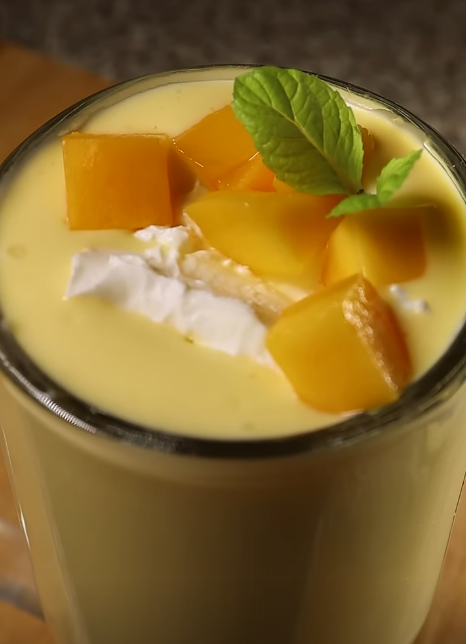

Mango Lassi

mango lassi is a refreshing yogurt drink very popular in hot summer days of pakistan
Source
Ingredients
- 1 Mango
- Yogurt
- salt
- ice cubes
- sugar
Steps
- slice a mango add to your blender along with some yogurt
- Add 1 tablespoon of sugar and a pinch of salt
- Add some ice cubes
- Add 1 cup of water and then blend away
- pour into your mug top it of with some cream mangos and garnish it with some mint
- Enjoy